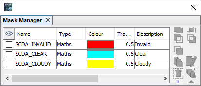

| SNAP Data Processors - SICE2 SCDA Processors Description |
|
Name: Used to select the SLSTR L1b source product. Use the ... button to open a data product currently not opened in the Sentinel Toolbox.
Name: Used to specify the name of the target product.
Save to: Used to specify whether the target product should be saved to the file system. The combo box presents a list of file formats.
Open in SNAP: Used to specify whether the target product should be opened in the Sentinel Toolbox. When the target product is not saved, it is opened in the Sentinel Toolbox automatically.
In standard processing mode, the SICE2 SCDA Cloud Processor does not have any processing parameters.
| Band name | Meaning |
|---|---|
| scda_cloud_mask | Cloud flag (see table below) |
| ndsi | Normalised Differential Snow Index |
| Flag name | Flag value | Description |
|---|---|---|
| SCDA_INVALID | 1 | Invalid |
| SCDA_CLEAR | 2 | Clear |
| SCDA_CLOUDY | 4 | Cloudy |
